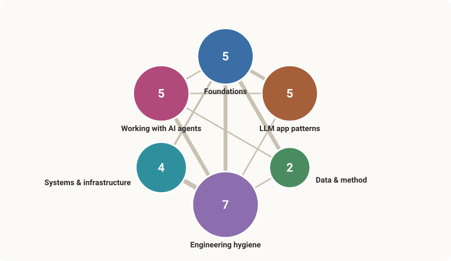

No matching notes.
Learning Notes
Plain-language notes on the ideas behind my projects. These started as private notes just for me; I've since made them public — as a backup, and because mapping how the concepts connect helps me see how my own projects fit together. The goal is to understand the concepts, not just have working code, and to keep adding over time.
Note on notes-api: notes-api was ported from Java/Spring Boot to Python/FastAPI, and its Kafka event loop collapsed into an in-process task. The notes that reference it (13, 14, 16–21, 26) have been updated to reflect that — several now trace the v1→v2 evolution and the tradeoffs behind it rather than freezing the Java version. See note 18 for the core change.

The note categories and how they connect — auto-generated from the notes, so it's never out of date.
▶ Open the full interactive map — hover to focus a note, click to pin its neighbourhood, double-click to open it.
How to use this
Each note is short and follows the same five-part shape:
- Plain idea — the concept in everyday words, no jargon.
- Analogy — a real-world comparison so it sticks.
- In my project — where I actually used it, with the file name.
- Why it matters — what problem it solves / what it buys me.
- Go deeper — questions to chase when I want to expand this note.
To add a concept: copy that shape into a new NN-name.md file and tick it off below. Keep it simple first; expand later. A half-written note is fine. After adding or editing a note, run python build_site.py to refresh the viewable index.html (see below).
Concept map
Concepts pulled from my three projects. [x] = written, [ ] = planned.
Foundations
- [x] 01 — Structured output via tool use (both projects)
- [x] 02 — Eval-driven development: knowing if a change actually helped (classifier)
- [x] 03 — Reading the numbers: accuracy vs precision/recall/F1 (classifier)
- [x] 13 — Classes vs functions: when to reach for a class (notes-api + classifier)
- [x] 14 — Constructors & dependency injection (notes-api + classifier)
LLM app patterns
- [x] 04 — Tool use / function calling, the general idea (both)
- [x] 05 — The agentic tool-use loop: letting the model decide (kb-agent)
- [x] 06 — RAG: answering from your own documents (kb-agent)
- [x] 07 — Embeddings & vector stores: search by meaning (kb-agent)
Data & method
- [x] 08 — Synthetic data and the "circular eval" trap (classifier)
- [x] 09 — Tiered model routing: paying for the big model only when it pays (classifier v2)
Engineering hygiene
- [x] 10 — Secrets and the
.envpattern (both) - [x] 11 — Reproducible environments: uv and lockfiles (both)
- [x] 12 — Checkpoint/resume and retries: surviving flaky API runs (classifier)
- [x] 15 — Semantic versioning: a version number is a promise (classifier)
- [x] 20 — Testing & coverage: knowing what's exercised (both)
- [x] 21 — Test-driven development: red, green, refactor (both)
- [x] 26 — Integration tests with Testcontainers: a real dependency, briefly (both)
Systems & infrastructure
- [x] 16 — Containers & Docker: ship it the same everywhere (both)
- [x] 17 — Layered architecture: controller, service, repository (notes-api)
- [x] 18 — Event-driven architecture: working through a message queue (notes-api)
- [x] 19 — Database migrations: versioning your schema (notes-api)
Working with AI agents
- [x] 22 — Steering an AI agent with CLAUDE.md (all projects)
- [x] 23 — Permissions, allowlists & hooks: guardrails for an agent (all projects)
- [x] 24 — One concern, one branch: parallel agent sessions (all projects)
- [x] 25 — Multi-agent workflows: fan-out & the collision boundary (all projects)
- [x] 27 — Fan-out cost control: cap the spend before you launch (all projects)
Viewing the notes
Four ways to read these as more than raw text. The .md files always stay the source of truth — the viewers are regenerated, never hand-edited.
1. Single page — zero install
python build_site.py # regenerates index.htmlOpen index.html in any browser (double-click). One offline file — no server, no install, no internet — with a category-grouped sidebar, a search box that filters notes as you type, and an auto "References / Referenced by" list under each note. Re-run build_site.py after editing or adding a note.
2. Polished site — MkDocs Material
A themed, fully searchable site with dark mode. Uses a one-time toolchain via uv (no permanent install). From this folder:
uv run --no-project --with mkdocs-material mkdocs build # → ../learning-notes-site/
uv run --no-project --with mkdocs-material mkdocs serve # live preview at :8000Then open ../learning-notes-site/index.html to read it offline. Note: the dark-mode toggle only works when the site is served over HTTP (mkdocs serve above, at http://127.0.0.1:8000) — opened as a bare file:// page the light/dark switch can't run, though layout, search, and everything else do. When you add a note, add one line to mkdocs.yml's nav: (option 1 picks new notes up automatically; this one needs the line).
Gotcha: if you've setUV_ENV_FILE=.envglobally (the convention from the classifier project), theseuvcommands fail here looking for a.env. Prefix them withUV_ENV_FILE=(note the trailing space) or rununset UV_ENV_FILEfirst.
3. Chat with them — kb-agent
kb-agent indexes this folder (via its notes_dirs: setting) into its knowledge base, so you can ask questions and get answers grounded in these notes with citations. See that project's README to run the chat UI.
4. See how they connect — concept map
python build_graph.py # regenerates concept-map.html + assets/category-map.svgOpen concept-map.html for a force-directed graph of every note: each note is a node (colored by category, larger when more notes point at it), and the lines are the in-text "note NN" cross-references. Drag to rearrange, hover to focus a note and read its TL;DR, click to pin that focus on one note's neighbourhood, and double-click to jump straight to it in index.html. Needs internet on first open (D3 loads from a CDN).
This step also regenerates assets/category-map.svg — the small category meta-map shown at the top of this README, built from the notes so it never needs a manual screenshot. Re-run build_graph.py after editing or adding a note.
Or view it live, no install: https://sanlee-ys.github.io/learning-notes/concept-map.html
Where these come from
- defense-news-classifier — an AI that reads a defense-news snippet and labels it (what it's about + which domain). Built to measure how well it does.
- kb-agent — an AI assistant that answers questions about my projects by searching a personal notebook of Markdown files (this is the "RAG" project).
- notes-api — a small notes REST API, now Python/FastAPI (originally Spring Boot/Java — see the note above and note 18 for why it changed); where the OOP/class examples (notes 13–14) come from.
01 — Structured output via tool use
TL;DR Hand the AI a form with fixed allowed answers (a "tool") and make it fill that out instead of writing prose — the API rejects off-menu answers before they reach your code.
Plain idea
Normally an AI answers with a paragraph of text. Often I don't want a paragraph — I want it to fill in a form: exact fields, and for some fields, only a fixed set of allowed answers. "Tool use" (also called function calling) is the feature that lets me hand the AI a form and make it fill that out instead of writing prose.
The catch it solves: if I just ask "reply in JSON with category and operational_domain," the model usually does — but sometimes it writes "aerial" instead of "air", adds a chatty sentence before the JSON, or misspells a key. Then my code has to detect and clean up the mess. With tool use, I define the form's rules up front (including the exact allowed values, called an enum), and the API checks the model's answer against those rules before handing it back to me. Off-menu answers get rejected on their end, not mine.
Analogy
The difference between asking someone "so, what do you want to order?" (they talk; I scribble it down and hope I got it right) versus handing them a checkbox menu (they can only tick boxes that exist). The menu makes a wrong answer almost impossible — and I don't have to interpret handwriting.
In my project
defense-news-classifier/src/classify.py. I define a classify_article tool whose schema says: return category (one of 5 listed values) and operational_domain (one of 6). I set tool_choice to force the model to use it. Because the API guarantees the shape, the core function is about seven lines — make the call, grab the tool result, return it. No JSON parsing, no "is this a valid label?" checks. The dataset generator (generate.py) uses the exact same trick to produce correctly labeled fake articles.
Why it matters
- The schema becomes the single source of truth ("the schema is the contract"). To add or rename a label, I change one place, not scattered parsing code.
- My code gets boring (in a good way) — no defensive cleanup, fewer bugs.
- The model can't drift to synonyms, because
"aerial"isn't on the menu.
The tradeoff I accepted: it costs a few extra tokens (the schema rides along) and the API call is a bit wordier than a plain "just chat" call. Cheap price for reliability.
Go deeper
- How does the API actually enforce the enum — does the model never generate the bad value, or does the API reject it after? (Worth understanding the mechanism.)
- What is JSON Schema, the format these tool definitions are written in?
- What happens when an article genuinely fits two categories? (The form forces one answer — is that the right design, or should I allow "uncertain"?)
- How would the same thing look with a different provider (e.g. OpenAI's
response_format)? Same idea, different wiring.
02 — Eval-driven development
TL;DR Before trusting any AI change, run a test set with known answers and compare the score before vs after — a change that reads better can quietly make the model worse.
Plain idea
An eval is a test set: a pile of examples where I already know the right answer. "Eval-driven" means that before I trust any change to the AI, I run the whole eval and compare the score before vs after. If the score didn't go up, the change didn't help — no matter how clever or clean it looked.
This matters more with AI than with normal code, because AI changes are persuasive. A reworded prompt can read smarter to a human while quietly nudging the model's behavior the wrong way. You cannot feel a 3-point accuracy drop by skimming a few outputs. The number catches what your eyes flatter.
Analogy
A blood test before and after a diet change, instead of going by how you feel. You can feel fine, even great, while your cholesterol quietly climbs; the lab number doesn't care how good the plan sounded.
In my project
This isn't hypothetical — it's the best lesson in the whole repo.
The classifier confused two labels, industry and procurement (both involve defense companies and money). The "obvious" fix: spell the distinction out more sharply in the prompt — "a firm winning a contract is procurement; a firm reporting earnings is industry." It read better. I ran the eval. It got worse: category accuracy fell 79.0% → 76.7%, and industry recall dropped from 0.22 to 0.10 (it caught even fewer of them). The sharper wording gave the model a cleaner rule for dumping borderline stories into the wrong bin. I reverted and kept the original.
The machinery: src/eval.py runs the classifier on all 300 articles and writes the score, a confusion matrix (which labels get mistaken for which), and a log of every wrong answer. The failed experiment is recorded in CHANGELOG.md so I don't repeat it.
Why it matters
- It's the only thing that reliably separates a real improvement from a plausible-sounding one.
- It makes prompt-tweaking a measured activity, not a vibes activity.
- The misclassification log turns failures into a to-do list — I can read the exact cases the model blows and look for patterns.
Go deeper
- What makes a good eval set? (Big one: my labels were made by the same AI that I'm grading — see note 08 on the "circular eval" trap.)
- How do I read a confusion matrix at a glance?
- When is a score difference real vs just random run-to-run noise? (I built a
stability.pyto measure that wobble — worth a note of its own.) - Precision vs recall vs F1 — what each one actually means (note 03).
03 — Reading the numbers: accuracy vs precision/recall/F1
TL;DR Accuracy alone can hide a label that's quietly failing. Precision and recall (per label) show you where it fails; F1 blends them; macro-F1 stops a small bad label from hiding behind big easy ones.
Plain idea
Accuracy is the obvious score: of everything, what fraction did I get right? It's fine when every label is roughly equal — but it lies when one label is rare or hard, because the easy labels drown out the struggling one in the average.
So for each label separately we ask two sharper questions:
- Precision — when the model says "X", how often is it actually X? Punishes false alarms.
TP / (TP + FP) - Recall — of all the real X's out there, how many did the model catch? Punishes misses.
TP / (TP + FN)
These two pull against each other. Guess "X" for everything and you catch them all (recall 100%) but cry wolf constantly (precision tanks). Guess "X" only when totally sure and your guesses are all right (high precision) but you miss most of them (low recall). F1 is a single number that balances the two (it's their harmonic mean, so it stays low unless both are decent).
Macro-F1 averages each label's F1 with equal weight. That's the honest headline for uneven problems: a small, failing label counts just as much as a big, easy one, so it can't hide.
Analogy
A metal detector at airport security:
- Recall = of everyone actually carrying metal, how many it caught. Misses are a recall problem (dangerous).
- Precision = when it beeps, how often there's really metal. False alarms are a precision problem (annoying, slow).
Crank sensitivity up → it beeps at everyone → recall 100%, precision awful. Crank it down → rarely beeps → precision high, recall awful. The "right" setting depends on which mistake costs you more.
In my project
The counting is just boolean arithmetic over the predictions table — no ML library needed (src/eval.py):
tp = ((df.true == label) & (df.pred == label)).sum() # said X, was X ✅
fp = ((df.true != label) & (df.pred == label)).sum() # said X, wasn't ❌ false alarm
fn = ((df.true == label) & (df.pred != label)).sum() # was X, missed ❌ miss
precision = tp / (tp + fp)
recall = tp / (tp + fn)The payoff shows up in the industry label: precision 1.000, recall 0.217. Read that out loud — every time it said "industry" it was right, but it only caught 1 in 5 of the real ones (the rest got mislabeled procurement). Plain accuracy would never have told me that. It's also why my honest headline, macro-F1 (0.765), sits below category accuracy (0.79): that one weak label drags the equal-weighted average down.
Update (v2): those figures are the v1 synthetic, self-graded baseline. v2 re-measured on a 54-snippet human-labeled gold set of real news: category accuracy 88.9% (macro-F1 0.906), operational-domain accuracy 88.9% (macro-F1 0.894) — and the industry label that this note flags as the weak spot is now F1 1.000, the blind spot closed. The v1 numbers stay here because the per-label reading is the lesson.
Why it matters
Choosing the metric is itself a decision. Headline accuracy would have let me brag; macro-F1 kept me honest and pointed a finger at the exact label to fix. Pick the number that exposes your weakness, not the one that flatters it.
Go deeper
- The precision/recall trade-off and "thresholds" — when you'd deliberately favor one.
- When recall matters more (cancer screening: don't miss) vs precision (spam filter: don't trash real mail).
- How to read a confusion matrix (which label gets mistaken for which) at a glance.
- Macro vs micro vs weighted averages — what each one is really measuring.
04 — Tool use / function calling, the general idea
TL;DR A "tool" is a function you describe to the model so it can ask you to run it. This is how an AI does things beyond talking — and you stay in control, because the model only requests the call; your code decides what actually happens.
Plain idea
By itself, a language model only produces text. It can't search your files, do reliable math, or call an API. Tool use (a.k.a. function calling) bridges that gap. You hand the model a menu of actions — each is a name + a description + an input form (schema). The model can't run anything itself; instead it requests a call: "please run search_kb with query='pandas'." Your code runs it and hands the result back.
There are two flavors of the same primitive:
- (a) Shape the output — force the model to fill a form so you get clean structured data instead of prose. (That's note 01.)
- (b) Give it abilities — let it look things up, calculate, hit an API, etc. (That's the agent in note 05.)
Both my projects use the same feature for these two different purposes.
Analogy
The model is a sharp colleague on the phone who can't touch your computer. You say: "Here are buttons I can press for you — SEARCH and LIST. Just tell me which." They say "press SEARCH for 'pandas'." You press it and read them the result. They keep going. The model is the brain; you are the hands. Nothing happens that you didn't run.
In my projects
- Classifier — flavor (a). One tool,
classify_article, forced every call. Pure output-shaping; the model never "decides" anything about tools. - kb-agent — flavor (b). Three tools,
search_kb,list_projects, andclassify_snippet, and the model chooses when (and whether) to call them. The last one is the side-effecting tool: it POSTs a snippet over HTTP to the siblingdefense-news-classifierservice, so the model can actually drive another project, not just read about it.
A detail that matters: the tool's description is a prompt. kb-agent's schemas are deliberately prescriptive about when to call each one —
"description": ("Search the personal knowledge base of projects and libraries. "
"Call this whenever the user asks about a tool, library, design "
"decision, or how something was used in a project.")Good descriptions visibly improve the model's tool-picking.
Why it matters
This single primitive is the bridge between "a model that talks" and "software that does things." Once you see that structured output and AI agents are both just tool use, a lot of the mystery evaporates. And the safety story is built in: the model can only ask; what the tool actually does is ordinary code you wrote and control.
Go deeper
- Forcing a tool (
tool_choice) vs letting the model choose — when to do which. - What happens when the model wants to call several tools at once (parallel calls).
- The risk surface: tools with side effects (writing files, sending email) — the model proposes, but you must decide what's safe to auto-run.
- How tool descriptions act as prompts that steer tool selection.
05 — The agentic tool-use loop
TL;DR An "AI agent" is just a loop: ask the model → run any tool it requests → feed the result back → repeat until it answers. About 15 lines of code. That's the whole trick.
Plain idea
In the classifier I force exactly one tool call and I'm done. An agent is the open-ended version: I don't know in advance how many steps it'll take to answer. So I run a loop:
┌─────────────────────────────────────────────┐
│ 1. send the conversation to the model │
│ 2. did it ask for a tool? │
│ • no → it gave a final answer → STOP │
│ • yes → run the tool(s), append results │
│ → go back to step 1 │
└─────────────────────────────────────────────┘
(plus a safety cap so it can't loop forever)The model is the decision-maker; the loop is the engine; the tools are the hands. "Agent" = model + loop + tools. Nothing more mystical than that.
Analogy
A research assistant you email a question. They reply either with an answer, or with "please look up X for me." You look up X, email it back. They might ask for one more thing, then answer. You repeat until they're done — and you'd cut them off after, say, 10 round-trips so they don't spiral.
In my project
kb-agent/agent/agent.py, the ask() method — a manual loop (I didn't use the SDK's auto-runner, so the control flow is visible and easy to follow):
for _ in range(MAX_TOOL_ITERATIONS): # safety cap (10)
resp = client.messages.create(..., tools=TOOLS, messages=self.messages)
self.messages.append({"role": "assistant", "content": resp.content})
if resp.stop_reason != "tool_use": # model gave a real answer
return final_text(resp) # → done
for block in resp.content: # else: run what it asked for
if block.type == "tool_use":
result = execute_tool(block.name, block.input)
tool_results.append({"type": "tool_result",
"tool_use_id": block.id, "content": result})
self.messages.append({"role": "user", "content": tool_results})Two things that are easy to get wrong: you must append the assistant turn (it carries the tool request) and you must send each tool result back with the matching tool_use_id. Mismatch those and the conversation breaks.
Why it matters
This little loop is what people mean by "AI agent." Seeing it written out demystifies the whole category. It also makes the failure modes obvious: runaway loops (hence the cap), and cost — every trip through the loop is another paid API call. And not every tool is a harmless local read: of kb-agent's three tools (search_kb, list_projects, classify_snippet), the last one POSTs over HTTP to the sibling defense-news-classifier service — a network/side-effecting call the loop might fire on any iteration, which is exactly why the result comes back as a structured observation the model can react to.
Go deeper
- How does the model "know" it's done? (It stops asking for tools.)
- Memory: kb-agent keeps
self.messagesacross turns so it remembers the chat — what changes if you reset it each question? - When to hand-roll the loop vs use the SDK's built-in tool runner.
- Guardrails: capping iterations, capping spend, and what to do when the cap is hit.
06 — RAG: answering from your own documents
TL;DR RAG = fetch the relevant notes first, then let the model answer using them. It makes the AI speak from your documents instead of its training memory — and lets it admit when it doesn't know.
Plain idea
A model only knows what it absorbed during training. It doesn't know your private notes, and it doesn't know what changed last week. RAG (Retrieval-Augmented Generation) fixes this in two steps:
- Retrieve — find the chunks of your documents most relevant to the question.
- Generate — hand those chunks to the model along with the question, and let it answer from them.
Because the answer is grounded in real text you provided, the model makes far less up, and it can point at which document it used.
Analogy
Open-book vs closed-book exam. Closed-book, the model answers from memory and can be confidently wrong. RAG turns it into an open-book exam where you've already flipped to the right page — it reads, then answers.
In my project
kb-agent is a RAG system. The "documents" are Markdown files about my projects and libraries (kb/). When I ask a question:
search_kbfinds the most relevant chunks (note 07 explains how "relevant" works).- The agent reads them and writes an answer.
The honesty rules live in the system prompt, and they're the important part:
Answer questions using the search_kb ... tools rather than your own prior knowledge.
When you state a fact that came from the KB, mention the source file. If the tools
return nothing relevant, say so plainly instead of guessing — do not invent details.So it cites the source file and is told to say "I don't know" when the KB is empty on a topic — instead of confidently inventing project details.
Why it matters
RAG is how you make an AI useful over private or fast-changing information without retraining anything. And the "cite your source / admit when you've got nothing" pattern is what keeps a RAG assistant trustworthy — grounding plus a way to fail honestly.
Go deeper
- Chunking: documents get split into pieces before retrieval — chunk too big and you bury the answer in noise; too small and you lose context. How to size it.
- What to do when retrieval grabs the wrong chunk (the model can only be as good as what it's handed).
- "Grounding" and citations — tying each claim back to a source.
- How do you even evaluate a RAG system? (Did it retrieve the right docs? Did it answer faithfully from them? — ties back to note 02.)
07 — Embeddings & vector stores: search by meaning
TL;DR An embedding turns text into a list of numbers that captures its meaning, so you can find related text by closeness in meaning rather than matching exact keywords. A vector store holds those numbers and finds the nearest ones fast.
Plain idea
Keyword search breaks the moment the words don't match. Ask "how do I keep secrets safe?" but the note says "API key management" — zero shared words, zero results, even though it's the perfect note.
An embedding fixes this. It converts a piece of text into a long list of numbers (a vector) arranged so that texts with similar meaning land near each other in that number-space. To search, you embed the question into the same space and grab the nearest note-vectors. "Secrets" and "API key management" end up close, so it just works.
A vector store (a database like ChromaDB) is what holds all those vectors and answers "find me the nearest ones" quickly, even over thousands of chunks.
"API key management" ─embed─▶ [0.12, -0.88, 0.05, ... ] ┐
"keeping secrets safe" ─embed─▶ [0.14, -0.85, 0.07, ... ] ├─ near each other
"pandas dataframes" ─embed─▶ [0.91, 0.10, -0.4, ... ] ┘ far awayAnalogy
A library where books are shelved by topic-closeness, not alphabetically — cooking next to nutrition next to gardening. To find a book you walk to the right neighborhood, even if you never knew the exact title.
In my project
kb-agent, scripts/index.py. It chops the Markdown KB into chunks and embeds each one into ChromaDB using a small model, all-MiniLM-L6-v2. The notable design choice:
The embedding model runs locally — no API key, no per-call cost, and nothing leaves the machine.
At query time, search_kb embeds the question with the same model and asks Chroma for the nearest chunks. That nearest-neighbor lookup is the Retrieve step that powers the RAG in note 06.
Why it matters
Embeddings are the engine under RAG and under "semantic search" in general. And the local-vs-API choice here is a real trade-off worth naming: local is private and free but a paid embedding model might retrieve a bit more accurately. For a personal KB, free + private wins.
Mini-glossary
- Vector — the list of numbers representing one piece of text.
- Dimension — how many numbers are in that list (MiniLM uses 384).
- Similarity — how "close" two vectors are; usually cosine similarity (angle between them), not literal distance.
- Chunk — one slice of a document that gets embedded as a unit.
Go deeper
- Why chunk at all, and how chunk size changes what gets retrieved.
- Cosine similarity intuition — why angle, not raw distance.
- Local vs API embedding models — quality, cost, and privacy trade-offs.
- The individual numbers in a vector don't "mean" anything on their own — only their pattern does. Worth sitting with that.
08 — Synthetic data and the "circular eval" trap
TL;DR I made the test data with the same AI that takes the test. That's cheap and perfectly balanced — but the score measures whether the model agrees with itself, not whether it'd handle real, human-written news.
Plain idea
To measure a classifier you need examples with known-correct answers. I had three options:
- Scrape real news — needs a scraper, licensing review, and humans to label each article.
- Find an existing labeled dataset — none matched my two-label scheme.
- Generate labeled examples with the AI — one API call per
category × domaincombo (30 combos × 10 = 300 articles), each one born with its label already attached.
I picked generate. The upside is real: no scraping, no licensing, no human labeling, and every label gets exactly 10 examples — perfectly balanced (note 03 on why balance helps).
The catch is in the name: circular. The same model wrote the data and grades it. So a high score really means "the classifier agrees with the labels the generator chose" — the model is consistent with itself. It does not prove it would do well on messy, human-written news it's never seen. I'm measuring consistency, not generalization.
There's a subtler bias too: AI-written snippets are more uniform in style and vocabulary than real news, so a model tuned on them would overfit to that tidy style and stumble on the real thing.
Analogy
Writing your own exam questions and the answer key, then acing the exam. Impressive- looking, but it only proves you're consistent with yourself — not that you've learned the subject. The real test is questions someone else wrote.
In my project
The README and decisions/003-synthetic-data-only.md call this out loudly — it's listed as the project's #1 limitation, not buried:
the same model generates and classifies the data. Numbers measure in-distribution consistency, not generalization to real-world news.
The honest v2 move is written down: re-run the eval against a small set of human-labeled real articles.
Update (v2): that move has since shipped. The classifier was graded on a 54-snippet human-labeled gold set of real news — the non-circular answer key v1 couldn't produce — scoring category accuracy 88.9% (macro-F1 0.906) and operational-domain accuracy 88.9% (macro-F1 0.894), with the once-weak industry label now at F1 1.000. The 79% / 97% figures below are the historical synthetic baseline; the circular-eval lesson is exactly why they couldn't be trusted on their own.
Why it matters
Every eval has a quiet question behind it: do I trust this number? (ties to note 02). Naming the circularity is what keeps the 79% / 97% figures honest. A number you can't trust is worse than no number — it feels like progress while telling you nothing.
Go deeper
- What would a real eval set need? (Real sources + human labels + a check that labelers agree with each other.)
- In-distribution vs out-of-distribution — the idea underneath the whole trap.
- Could I keep synthetic data for prompt development but switch to real data for the final eval only?
- Data leakage in general — any time the answer sneaks into the question.
09 — Tiered model routing: pay for the big model only when it pays
TL;DR Don't run the expensive model on every request. Use a cheap, fast model as the default and escalate to the premium one only for the hard cases the eval says it can't handle.
Plain idea
There's a menu of models: smaller = cheaper and faster, bigger = smarter and pricier. The lazy choice is "use one model for everything." Tiered routing says: choose the tier per task, guided by what the numbers actually show you need.
The eval already told me where money should and shouldn't go:
- Operational domain is at 97.3% — the cheap model nails it. Spending more buys nothing.
- Category is stuck at ~79%, but the ceiling is label ambiguity (industry vs procurement is genuinely fuzzy — note 03), not the model being too weak. A bigger model won't un-blur a fuzzy definition across the board.
Update (v2): re-measured on real, human-labeled text, category is now 88.9% (macro-F1 0.906) and domain 88.9% (0.894) — the ceiling is still label ambiguity (industry vs. procurement), not model horsepower, so this holds.
So the v2 plan: keep claude-sonnet-4-6 as the workhorse on every article, and escalate to a top-tier model (e.g. Opus) only on the low-confidence boundary cases — running the premium model on ~15% of articles instead of 100%. Most of the quality, a fraction of the cost.
A second use of the same idea: once v2 uses real data, I can't auto-grade against an AI-made answer key anymore (note 08). There I'd reserve the top tier as an LLM judge — the expensive model grades, the cheap model does the everyday work.
Analogy
A hospital triage desk. A nurse handles the routine cases fast and cheap; only the complicated ones get escalated to the specialist. You don't send every sniffle to the senior surgeon.
article ─▶ sonnet-4-6 (cheap, fast)
│
confident? ──yes──▶ done (~85% of articles)
│
no ──▶ Opus (premium) (~15%, the fuzzy ones)In my project
This lives in CLAUDE.md as a v2 idea — not built yet. The guiding principle is written there in one line:
model tier is a per-task cost/quality knob decided by the eval, not a default — measure first, escalate only where it pays.
Why it matters
It's the same discipline as note 02: let the measurement drive the decision. The eval doesn't just tell you if you're good — it tells you where to spend.
Go deeper
- How do you measure "confidence" to decide who gets escalated? (The model doesn't hand you a clean confidence number for free.)
- The cost / latency / quality triangle — you usually optimize two at the expense of the third.
- LLM-as-judge — using a strong model to grade outputs, and where that can mislead.
- Break-even math — escalating costs more per call, but only on a slice; does it net out?
10 — Secrets and the .env pattern
TL;DR Your API key is a password. Keep it in an untracked .env file and load it at runtime — never typed into the code, never committed to git.
Plain idea
The Anthropic key bills to your account, so it's a secret like a password. Two hard rules: (1) it must not live in your source code, and (2) it must not be committed to git (where it'd sit in the history forever — and be public the moment you push). The standard solution is the .env pattern, which is just two files with two jobs:
.env— holds the real key. Listed in.gitignore, so git ignores it. Lives only on your machine..env.example— a committed, secret-free template (ANTHROPIC_API_KEY=) that documents what keys the project needs without revealing them.
At runtime the key is loaded from .env into an environment variable, and the code reads it from there — never hardcoded.
Analogy
.env.example is the labeled empty key hook by the door — it tells everyone "a house key goes here." .env is the actual key, which you keep in your pocket, not hanging where anyone walking past could grab it.
In my project
The classifier reads ANTHROPIC_API_KEY from the environment, and the README documents the workflow:
cp .env.example .env # then paste your real key into .env
uv run --env-file .env python src/eval.py # inject the key for this runThere's an honest caveat written down too: because .env is gitignored, it's machine-local by design. A fresh clone or a new laptop has no .env, so you recreate it (copy the template, paste the key). That's not a bug — it's the entire point of keeping secrets out of git.
Why it matters
A key committed to a public repo gets scraped by bots within minutes and runs up your bill. The .env split — real secret ignored, empty template committed — is the simplest pattern that keeps the secret out while still telling the next person what's needed.
Go deeper
- If a key ever does land in a commit, deleting the line isn't enough — it's in the history. The fix is to rotate (revoke + reissue) the key.
- Environment variables vs dedicated secret managers (Vault, cloud secret stores) for larger setups.
- How
.gitignoredecides what git skips — and the habit of runninggit statusbefore every commit to catch a stray.env. - Why even
export KEY=...in your shell beats hardcoding (it just vanishes when the shell closes).
11 — Reproducible environments: uv and lockfiles
TL;DR "Works on my machine" usually means mismatched library versions. A lockfile pins the exact version of everything, so every machine — yours, a teammate's, CI — installs the identical environment.
Plain idea
Your code depends on libraries, and libraries have versions that change behavior over time. If all you write down is "I need anthropic," two people can install two different versions and get two different results. The fix is two files with two distinct jobs:
pyproject.toml— what you want, usually a flexible range:anthropic>=0.40.0. Human-edited.uv.lock— what you actually got: the one exact version that range resolved to, plus every sub-dependency, frozen. Machine-generated.
uv sync reads the lockfile and builds a local .venv with exactly those versions. uv run <cmd> runs a command inside that env — no manual "activate the virtualenv" step. Because the lockfile is committed, anyone who runs uv sync gets a matching setup.
Analogy
pyproject.toml is a recipe that says "some flour." uv.lock is the note that says "King Arthur bread flour, this exact bag" — so the cake comes out the same in every kitchen.
In my project
Both repos use uv. The classifier README spells out the loop:
uv sync --group dev # build .venv from uv.lock (exact pinned versions)
uv run python src/eval.py # run inside that env — no activation neededA requirements.txt is kept in sync as a pip fallback for anyone who isn't using uv.
Why it matters
Reproducibility is the difference between a bug you can recreate and a ghost you can't. Pinned versions also mean a dependency can't silently update overnight and break you — you upgrade on purpose by re-locking, never by surprise.
Go deeper
- Official docs (Astral's uv): the Working on projects guide walks the
uv sync/uv run/uv lockloop end to end, and Projects concepts explains thepyproject.toml+ lockfile split in depth. - "Abstract" deps (ranges, in
pyproject.toml) vs "pinned" deps (exact, in the lockfile) — why you need both. - How and when to update the lockfile deliberately (re-resolve → test → commit).
- Why
.venvis gitignored butuv.lockis committed. - How CI uses the same lockfile to test in a clean environment every run.
12 — Checkpoint/resume and retries: surviving flaky API runs
TL;DR A 300-call job will hit a hiccup. Save progress after every call (so a crash costs one item, not the whole run) and auto-retry the transient errors (so a blip doesn't kill the job).
Plain idea
The eval makes ~300 API calls and takes a few minutes. Over that many network calls, something eventually fails — a dropped connection, a momentary server error, a rate-limit bump. Two cheap habits make the job robust:
- Checkpoint / resume. Write each prediction to disk immediately after its call. On restart, skip any article that already has one. A crash at call 250 costs you call 250 — not calls 1 through 249.
- Retry with backoff. Wrap the call so that on a transient error (a 500 server blip, a 429 rate-limit) it waits and tries again — and the wait grows each time (e.g. 2s, then 4s). That "exponential backoff" gives an overloaded server room to recover instead of you hammering it.
Analogy
Checkpointing is saving your game after every level instead of only at the end — die on level 9 and you respawn at 9, not level 1. Backoff is knocking on a busy door: no answer, so you wait a little longer each time instead of pounding nonstop.
In my project
src/eval.py:
# Resume: skip articles that already have a saved prediction. Each prediction
# is written right after its API call, so a crash never loses more than one call.
def classify_with_retry(...): # exponential backoff: 2s → 4s
# retry transient 500 / 429 errors, then give upThe generator also drops a 0.5s sleep between calls to stay comfortably under the rate limit in the first place — avoiding the error beats retrying it.
Why it matters
Without these, one network blink at minute 4 means redoing everything — and re-paying for it. Resumable, retry-tolerant jobs are a habit that scales far past this project: any long batch over a flaky network wants both.
Go deeper
- Idempotency — designing a job so that re-running it is safe and never double-works.
- Which errors are safe to retry (transient: 429 / 500 / timeout) vs which aren't (400 bad request — retrying won't help).
- Jitter — adding randomness to the backoff so many clients don't all retry in lockstep.
- Where the checkpoint should live — a CSV here; a database or queue for bigger jobs.
13 — Classes vs functions: when to reach for a class
TL;DR Use a plain function when you just transform input to output and forget it. Reach for a class only when you have state worth keeping, rules about what "valid" means, and behavior glued to that state. Most code is functions; a class has to earn its keep.
Plain idea
A function is a verb: data goes in, a result comes out, nothing is remembered. A class is a noun: a thing that holds some state and owns the behavior that acts on it. The beginner trap is reaching for a class by reflex. The rule I actually use: only make a class when I have all three of —
- state that lives longer than one call,
- invariants (rules about what a valid instance looks like), and
- behavior that only makes sense paired with that state.
No three? A function is the simpler, truer tool.
Analogy
A blender vs a recipe card. A recipe (function) takes ingredients and returns a smoothie; it doesn't remember yesterday's smoothie. A blender (object) has state — on or off, full or empty — and its "blend" button only makes sense given what's inside. You buy a blender when you have something to keep and buttons bound to it; you don't buy a blender to add two numbers.
In my project
The contrast shows up across two of my repos:
- classifier — functions.
defense-news-classifier/src/generate.pyis just constants and two functions (generate_combo,main). It's a stateless pipeline: hand it a (category, domain) pair, get back a list of articles. Nothing to hold, no invariant to guard — so wrapping it in a class would be a function wearing a costume. - notes-api — classes. The notes API is all classes, because it has long-lived things with rules: a
Note(must always have a title), aNoteService(owns the business rules). Each class is one responsibility.
The tell that a dict secretly wants to be a class: in generate.py I rebuild {"id": ..., "text": ..., "category": ..., "operational_domain": ...} by hand every loop. That fixed shape with nothing enforcing it is exactly what a Python @dataclass (or a Java record) formalizes — see note 14.
Why it matters
- Simplicity by default. Functions are easier to read, test, and move around. Classes add ceremony; only pay it when state/invariants/behavior justify it.
- A class names a responsibility. When one is warranted (the notes-api layers), the class boundary becomes the design — one place per rule.
- It tells you when to refactor. The moment a function grows a pile of config it keeps passing around (a client, a model name, retry settings), that's the signal to bundle them into an object — see note 14.
Go deeper
- Where exactly is the line? Could
generate.pylegitimately become aDatasetGeneratorclass, and what would tip it over? - Python dataclasses vs Java records vs a hand-written class — when is each the right amount of structure?
- "Composition over inheritance" — once I do have classes, how do I avoid deep class trees?
14 — Constructors & dependency injection
TL;DR A constructor is the setup ritual that runs when you create an object; its job is to leave the object valid and ready, so nobody can get a half-built one. Passing an object's dependencies into its constructor (dependency injection) makes those dependencies explicit, final, and easy to fake in tests.
Plain idea
When you create an object, a special function runs first: the constructor (__init__ in Python, Note(...) in Java). Its one job is to leave the new object in a valid, usable state — it's the gatekeeper of "what valid means." If a Note can't exist without a title, the constructor demands a title, and there's simply no way to build a blank one.
A second, bigger use: dependency injection. Instead of an object reaching out and creating the things it needs, you hand them in through the constructor. The object just declares "I need a repository" and someone supplies one — turning a hidden dependency into a stated one.
Analogy
A constructor is new-hire onboarding before someone's allowed to start: badge issued, laptop assigned, paperwork signed. You don't let a half-onboarded employee answer support tickets. Dependency injection is the company handing them the laptop on day one, rather than the employee buying a random one off the street — you control, and can swap, what they're given.
In my project
In notes-api, valid-by-construction lives in the request schema. NoteRequest is a Pydantic model, and its fields are the definition of valid — a note with no title simply can't be built:
class NoteRequest(BaseModel):
title: str = Field(..., min_length=1, max_length=255)
content: str = Field(..., min_length=1, max_length=10000)
tags: list[str] = Field(default_factory=list)A request missing its title never makes it past construction — FastAPI rejects it with a 422 before any of my code runs. It deliberately has no id field, so a client can't set server-owned data — the same "the schema is the contract" principle as structured output in note 01.
Dependency injection shows up in NoteService: it takes its database session through the constructor and stores it, so the service can't exist without one — and a unit test can hand it a throwaway session with no web server in sight:
class NoteService:
def __init__(self, db: Session) -> None: # the dependency is handed IN
self.db = db
# In a test — no FastAPI, just a session against a temp database:
service = NoteService(test_session)For real requests FastAPI supplies that session via Depends(get_db), which opens one per request and closes it after — the framework doing the injection instead of me wiring it by hand.
The same shape recurs in the classifier: the day generate.py (note 13) grows shared config, I'd hand the client in once through __init__ rather than threading it through every call:
class DatasetGenerator:
def __init__(self, client, model="claude-..."): # __init__ = the constructor
self.client = client # dependency injected here, reused by every method
self.model = modelWhy it matters
- No half-built objects. Whole classes of "I forgot to set field X" bugs vanish — the constructor won't let you.
- Testability. Injected dependencies can be swapped for fakes, so I can test the rules without a real database or network.
- Honesty. A constructor's parameter list is a public statement of what the object truly needs in order to exist.
Go deeper
- Constructor injection vs field/setter injection — why is constructor injection usually preferred?
- What's an immutable object, and why are
record/ frozen-dataclasstypes worth reaching for? - When a constructor needs many parameters, what patterns (builder, factory) keep it sane?
15 — Semantic versioning: a version number is a promise
TL;DR MAJOR.MINOR.PATCH isn't a counter — each digit is a promise about what kind of change happened. PATCH = a fix (same behaviour, more correct), MINOR = a new backward-compatible capability, MAJOR = a breaking change. Bump a digit and every digit to its right resets to 0.
Plain idea
A version like 2.1.0 has three parts, and each one means something specific:
- PATCH (the last digit) — a fix. Behaviour is the same, just more correct. No new feature, and nothing a caller relies on changes.
- MINOR (the middle digit) — a new, backward-compatible capability. You added something; you didn't change what already worked. Bumping MINOR resets PATCH to 0.
- MAJOR (the first digit) — a breaking change. The contract callers depend on changed, so old assumptions no longer hold. Bumping MAJOR resets both MINOR and PATCH to 0.
The reset is the whole trick. Read straight down the last digit and it climbs within a line (2.0.1 → 2.0.2) but snaps back to 0 the moment a digit to its left moves (2.1.0, 3.0.0). So the number isn't a tally of how many releases you've shipped — it's a claim about what this release did to the people depending on you.
Analogy
Think of book editions, not a page counter. Fixing typos and reprinting is a patch — same book, fewer errors. Adding an appendix that doesn't touch the existing chapters is a minor edition — extra value, and your old page references still work. Rewriting and renumbering the chapters is a new (major) edition — anyone's notes against the old one are now wrong. The edition number tells a returning reader, at a glance, whether their bookmarks still hold.
In my project
defense-news-classifier is versioned this way (the plan lives in its CLAUDE.md). The output contract — the {category, operational_domain} JSON the classifier returns — is the thing each version makes promises about; that contract is the schema from note 01.
v1→v2.0.0was a MAJOR bump: the whole methodology changed (synthetic self-grading → real text + human-labeled gold + retrieval), so prior results no longer compare.- Planned
v2.1.0(MINOR): scale the eval with the validated judge — a new capability, same output contract. Thenv2.1.1(PATCH): fix whatever that larger run exposes. - Planned
v2.2.0(MINOR): tiered model routing — that's note 09, and it's additive, so callers are unaffected. - Planned
v3.0.0(MAJOR): add aregionfield. That changes{category, operational_domain}itself → it breaks the contract, so MINOR and PATCH reset to 0.
Each bump is decided by the eval, not by default (note 02): you measure first and only spend a digit — or a premium model — where the numbers say it pays. That's why scaling the eval (2.1.0) comes before paying for routing (2.2.0). The version itself is pinned in pyproject.toml / uv.lock (note 11), and each milestone gets a git tag + a CHANGELOG entry.
Why it matters
- It's a promise, not a counter. Someone depending on your output reads
2.1.0→2.1.1and knows it's safe to take;2.x→3.0.0warns them to expect breakage. That's information they get for free, from the number alone. - It forces you to name the change. Choosing patch-vs-minor-vs-major makes you say out loud whether you broke the contract — exactly the discipline note 01 (the schema is the contract) is about.
- It pairs with measure-first. Additive work (note 09) earns a MINOR; changing the contract earns a MAJOR; a fix earns a PATCH — and the eval (note 02) is what tells you which one you actually did.
Go deeper
- For an ML system, what exactly is the "public contract"? Just the output schema, or also a quality bar ("accuracy won't regress")? Is a big accuracy drop a breaking change even when the JSON shape is identical?
- What are
0.xversions and pre-release tags (3.0.0-rc1) for, and when do you graduate off0.x? - How does Keep a Changelog map onto these bumps?
- Where's the line between MINOR and MAJOR when a change is technically compatible but shifts outputs enough that downstream results move?
16 — Containers & Docker: ship it the same everywhere
TL;DR "Works on my machine" usually means the machine is different, not the code. A container packs the OS, the runtime, the libraries, and your app into one sealed bundle that runs the same on your laptop, a teammate's, or the cloud. Docker is the tool that builds and runs those bundles.
Plain idea
A container takes everything your app needs to run — a stripped-down Linux, Python 3.11, your pinned dependencies, and your source files — and seals it into one image. You build the image once and run it anywhere; the host barely matters because the container carries its own world with it.
Two files do the work:
Dockerfile— the recipe. Start from a base (python:3.11-slim), install the deps, copy in the code, say how to launch it. Human-edited..dockerignore— the "don't pack this" list. Keeps junk and secrets out of the bundle so the image stays small and safe.
This is the cross-language cousin of the lockfile idea in note 11: a lockfile pins your Python dependencies; a container pins the whole stack underneath them too — the OS, the Python version, the system libraries. The lockfile makes the deps reproducible; the container makes the entire environment reproducible.
Analogy
A lockfile is "this exact bag of flour." A container is the whole sealed test kitchen, shipped on a pallet — same oven, same brand of flour, same thermometer, already wired up. You don't reassemble the kitchen at the destination; you plug in the pallet and it runs.
(The project notes call this a "lunchbox" — chef, kitchen, ingredients, and recipe sealed in one box. Same idea: the container carries its environment with it.)
In my project
The classifier has a real Dockerfile that packs the serving API:
FROM python:3.11-slim
WORKDIR /app
COPY requirements-api.txt .
RUN pip install --no-cache-dir -r requirements-api.txt
COPY src/api.py src/classify.py ./src/A few deliberate choices in it:
- Lean on purpose. It installs only
requirements-api.txtand copies onlyapi.py+classify.py. The generator, the eval scripts, the data, and heavypandasare left out — the drive-thru window doesn't need the grading kit. - Layer caching. Deps are copied and installed before the source, so changing a line of code doesn't re-run the slow
pip install. - Runs as non-root (
useradd ... appuser) — if the process is compromised it isn't root inside the container. $PORTat runtime — the host injects the port; the image doesn't hardcode it.
The .dockerignore is the secrets guard: it lists .env and .env.* so no API key ever gets baked into the image — exactly the rule from note 10 (secrets live in the environment, never in the artifact). It also drops .git/, data/, and README.md to keep the build context small.
Earlier, my other repo used Docker the other way too — a docker-compose.yml spun up a local Kafka broker plus a web UI in one docker compose up, back when the system was event-driven (note 18). That stack is retired now that enrichment runs in-process, but the distinction it taught still holds: one container to ship an app, several wired together to run a dev stack.
Why it matters
It kills the "works on my machine" ghost for good. The image that passes on my laptop is the same bytes that run in the cloud — not a similar setup, the identical one. It also makes the runtime disposable and honest: a fresh container every time means no leftover state quietly keeping things alive, and the .dockerignore line means a leaked image can't leak a key.
Go deeper
- Layers and caching — why ordering
COPY/RUNwell makes rebuilds fast, and how a layer is reused until something above it changes. - Multi-stage builds — build in a fat image, copy only the artifact into a slim one. (My Dockerfile skips this on purpose: pure-Python wheels, nothing to compile.)
- Image vs container — the image is the frozen recipe; the container is one running copy.
docker compose— declaring several containers and their wiring in one file (like the retired Kafka dev stack), vs a single shipped service.- Where images live — registries, tags, and how CI builds and pushes them.
17 — Layered architecture: controller, service, repository
TL;DR Split a backend into three stacked layers — a controller that speaks HTTP, a service that holds the rules, and a repository that talks to the database. Each layer knows only the one beneath it, so a request flows straight down and the answer travels straight back up.
Plain idea
A request could be handled by one big function that reads the HTTP, runs the logic, and hits the database all at once. Layered architecture says: don't. Give each job its own layer.
- Controller — translates HTTP ↔ method calls. Paths, verbs, status codes. Nothing else.
- Service — the business rules. "What does an update mean?" "404 if it's missing?"
- Repository — reads and writes the database, and nothing above it.
The dependencies only point downward: the controller knows the service, the service knows the repository, the repository knows the database. Nothing points back up — the database layer has no idea the web even exists. Each layer is a class with one responsibility (note 13), and each is handed the layer below it through its constructor (note 14).
Analogy
A restaurant. The waiter (controller) takes your order and brings your food — they talk to you, not the stove. The kitchen (service) decides how the dish is actually made. The pantry (repository) just stores and fetches ingredients. The waiter never cooks, the pantry never greets customers, and you never wander into the kitchen yourself. Everyone has one job, and the order flows one direction: front of house → kitchen → pantry, then the plate comes back.
In my project
In notes-api, follow one POST /notes with body {"title":"Buy milk","content":"2% and oat"}:
- Controller (
router.py'screate_note) receives the HTTP body as a validatedNoteRequest, hands it to the service, and returns the result. A couple of lines. - Service (
NoteService.create) applies the rules — for create it's just "save it," butupdateis a read-modify-write andget_by_idraises a 404 if missing. - Data layer — the SQLAlchemy
Sessiondoes the actual read/write (self.db.add(note),self.db.query(Note)). In the Java version this was a separateNoteRepositoryclass that Spring Data generated; the Python port folds that role into the ORM session, so the service talks to it directly. - The result travels back up: ORM
Note→NoteResponse(a Pydantic model) → JSON → HTTP 201.
The key discipline is that the entity never leaks out. The controller speaks DTOs, not the Note entity — NoteRequest coming in, NoteResponse going out. NoteRequest has no id or timestamp fields, so a client can't set server-owned data (the mass assignment bug). The DTO is the wall between the outside world and my storage shape: entities talk to the database, DTOs talk to the world.
Why it matters
- Test a layer alone. Hand
NoteServicea throwaway session and test the rules with no web server (NoteService(test_session)— note 14). - Swap a layer. Move from SQLite to PostgreSQL and only the data layer cares (it's one
DATABASE_URL). Add a CLI and only a new top layer changes; the rules stay put. - Reason locally. A wrong status code is a controller bug. A wrong "valid update" is a service bug. The layout tells you where to look before you even open the file.
Go deeper
- Where does a cross-cutting concern (auth, logging, caching) live when it touches every layer?
- The mapping cost — every boundary needs a DTO↔entity conversion. When is that worth it, and when is it ceremony?
- "Skinny controller, fat service" — and the failure mode where logic leaks up into the controller or down into the entity.
- How transactions span the service ↔ repository boundary, and why the service usually owns them.
18 — Event-driven architecture: working through a message queue
TL;DR Instead of one component calling another directly and waiting for a reply, it publishes an event to a queue and moves on. Whoever cares subscribes and reacts on their own time. The two sides stop depending on each other being up.
Plain idea
In the usual request-and-wait flow (note 17), component A calls component B and blocks until B answers. A has to know B exists, know how to reach it, and B has to be up — or A's request fails. They're chained together.
Event-driven architecture breaks that chain. A does its own job, then announces a fact ("a note was created") by dropping a message onto a queue. It returns immediately. It doesn't know or care who's listening. Later — on their own schedule — any interested consumers pick the message up and react.
Three words carry most of it:
- Producer — the side that publishes the event (A).
- Consumer — the side that subscribes and reacts (B, and any others).
- Topic — the named stream the event goes onto. The queue in the middle (here, Kafka) holds events in a durable log, so a slow or absent consumer doesn't lose anything; the message waits until it's read.
A topic is split into partitions (parallel lanes) living on brokers (the queue's servers). That's just how the queue scales and stays safe — more lanes serve more consumers at once, more brokers mean copies survive a machine dying. You can publish without thinking about either.
Analogy
A phone call vs. a mailbox. The synchronous way is phoning someone: you both have to be on the line at the same time, and you wait while they think. The event-driven way is dropping a letter in a mailbox and walking off. You're done the moment it's posted. Whoever's interested checks the box later and acts — and you never had to know who they were.
In my project — I built this, then deliberately took it out
notes-api is where I felt this firsthand, and where I later learned the other half of the lesson: when not to use it.
v1 (Kafka). NoteService.create() saved a note and then published a NoteCreated event to a note-events topic, keyed by the note id so every event about the same note stayed in order on one partition. POST /notes returned the instant the row was saved, never waiting on anything downstream. A separate classifier consumer subscribed and tagged the note on its own time; notes-api never had to know it existed. That one publish is what made it event-driven. The honest catch was that the DB save and the event send weren't atomic, so a crash between them could drop an event — a dual-write risk I'd accepted, with the transactional outbox noted as the real fix.
v2 (no broker). I then ported notes-api from Java/Spring Boot to Python/FastAPI and, in the process, deliberately collapsed the queue away. Enrichment now runs in-process: creating a note schedules a FastAPI BackgroundTask that calls the classifier's HTTP /classify and writes the labels back as tags. POST /notes still returns immediately, so I kept the responsiveness win, but I gave up the decoupling and resilience the durable log was buying.
Why I made that trade. For a single-writer hobby system with one consumer, Kafka was paying rent I wasn't using. There were no other subscribers to decouple from, no replay to backfill, no throughput that needed partitions — just a broker, a topic, and a dual-write hazard to babysit. The in-process task removes the broker, the dual-write window, and a whole class of operational surface, in exchange for losing what I was never actually using. If a second consumer or a real replay need ever shows up, the queue earns its place back. The old Kafka consumer is preserved, marked inactive, in the classifier repo as a reference implementation, and the idempotent prefixed-tag writeback it pioneered now lives in notes-api's tasks.py.
The rest of this note describes the pattern itself, which is worth knowing cold even when the right call is to not reach for it.
Why it matters
This is the asynchronous, decoupled alternative to the synchronous layered flow in note 17. It buys three things: decoupling (add a new consumer without touching the producer), resilience (a consumer being down doesn't break the producer — the event waits in the log), and responsiveness (slow work moves off the request path).
The cost is honesty about eventual consistency: the note exists now, its tags show up a moment later. The flow also hops across services and time, which is harder to follow — the price you pay for not chaining everything together.
Go deeper
- Idempotent consumers — the queue may deliver the same event twice (at-least-once), so a consumer must handle a repeat without double-acting.
- The transactional outbox — the production fix for the dual-write problem above.
- Eventual consistency — when "correct in a moment" is fine and when it isn't.
- Replay — because the log keeps events by offset and doesn't delete on read, a brand-new consumer can read history from the start and backfill.
- Tracing an event across services (distributed tracing) when there's no single top-to-bottom call to read.
19 — Database migrations: versioning your schema
TL;DR Your database structure — tables, columns, types — changes over time. A migration is one numbered, ordered change to that structure, applied exactly once. Keep them in source control and any environment can rebuild the same schema from scratch.
Plain idea
Code isn't the only thing that evolves; the shape of your database does too. You add a tags table, you widen a column, you add an index. The naive way is to log into each database and hand-type the change — which means dev, CI, and production slowly drift apart and nobody can say what's actually in each one.
A migration fixes that. It's a small SQL script with a version number, like V1__create_notes_and_tags.sql. A tool (here, Flyway) runs them in order, records each one it applied in a flyway_schema_history table, and never runs the same one twice. Start the app a second time and Flyway sees V1 is already done and does nothing.
The rule that makes it work: you never edit an applied migration. The next change is always a new file — V2__...sql. The history is append-only, so the schema is the sum of every migration replayed in order — reproducible anywhere.
This is the same idea as the lockfile in note 11: there we pinned exact library versions so every machine builds the identical environment; here we pin the schema as ordered scripts so every database rebuilds identically — from source, not from someone's memory of what they typed last Tuesday.
Analogy
Migrations are the numbered chapters of a book. To get the current story you read chapters 1, 2, 3 in order — you don't rewrite chapter 1 once it's published, you write chapter 4. Anyone with the same book reads the same story. Flyway is the bookmark that remembers which chapter you've reached, so re-opening doesn't re-read what you've already finished.
In my project
notes-api has lived on both sides of this lesson.
v1 (Flyway). As a Java/Spring Boot app on PostgreSQL, it let Flyway own the schema. One migration, V1__create_notes_and_tags.sql, created the notes and note_tags tables; the filename encodes the contract (V + version + __ + description). On startup Flyway recorded each applied script in flyway_schema_history and never re-ran one, while Hibernate ran with ddl-auto=validate — creating nothing, only checking the entities still matched the tables Flyway built, so drift failed the app at boot instead of at 2 a.m.
v2 (auto-create, on purpose). The Python/FastAPI port has no migration tool. On startup it calls SQLAlchemy's Base.metadata.create_all, which builds any missing tables straight from the models, against a default SQLite file. That's exactly the auto-create approach the rest of this note warns against for a real database — and it's the right call here: a single-user hobby app on a throwaway SQLite file has no production schema to protect and nothing to drift from. The day it grows a real Postgres and a second schema change, the Python answer is Alembic (below), and that's the upgrade I'd make.
Why it matters
Without migrations, your schema is an undocumented thing that exists differently in every environment, and "set up a fresh database" becomes tribal knowledge. With them, the schema is reviewable in a pull request, replayable on a clean machine, and identical in CI and production.
It also surfaces a sharp lesson: a query that passed every H2 test blew up on Postgres (function lower(bytea) does not exist) because H2 isn't Postgres. Versioned, real-engine migrations are what let you catch dialect bugs before production instead of discovering them there.
Go deeper
- The append-only rule — why you add
V2instead of editingV1, and whatflyway_schema_historyactually stores. validatevsmigratevs auto-create — letting Hibernate build tables is fine for H2/tests, dangerous for a real database (no history, no review).- Rollbacks / down-migrations — most teams roll forward with a new fix migration rather than truly reversing one.
- Testing against the real engine (e.g. Testcontainers) so "green on H2" can't hide a Postgres-only bug.
- Other migration tools in the same family: Liquibase (Java), Alembic (Python), Rails migrations.
20 — Testing & coverage: knowing what's exercised
TL;DR Tests catch a change that quietly broke something. Coverage measures how much of your code the tests actually ran — but "ran" isn't "checked," so high coverage of weak tests is still weak.
Plain idea
A test is a small program that runs your real code with a known input and asserts the answer is what you expect. Run them after every change: if one goes red, you broke something you can see, before it ships. Tests are to code what evals are to the model (note 02): an automatic check that a change didn't break things.
But a green test suite has a blind spot — it only tells you the tests you wrote passed. It says nothing about the code you forgot to test. Coverage fills that gap by recording which lines and branches actually executed during the run. It turns "I think that's tested" into a number.
The catch worth tattooing on your hand: coverage measures what code was exercised, not that it's correct. A test with no real assertions still lights up coverage. High coverage of weak checks is still weak.
Analogy
Coverage is the checklist of rooms the cleaner walked through; it is not proof any room is actually clean. Walking into the kitchen counts as "covered" even if you never wiped a counter. The checklist finds the rooms nobody entered — a real blind spot — but it can't tell you whether the work inside was any good.
In my project
The notes-api repo makes both halves concrete. Its tests sit at a few levels (a test pyramid): fast pure-logic unit tests with no framework, API tests that drive real HTTP routes against a throwaway database, and a thin full-boot check. The lesson baked in: push most testing down to the fast unit level and use the slow, realistic tests sparingly.
Coverage taught me the line-vs-branch lesson firsthand. Back when notes-api was Java it reported ~97% line but only ~69% branch under JaCoCo — and that gap is the point. "Did this line run" is easy to max out; "did we test both sides of each if" is the stricter, more honest number. The remaining branch gaps were deliberately-skipped defensive paths, because coverage is a guide, not a target — chasing 100% just breeds low-value tests. Its real win was finding PUT/DELETE endpoints that no test touched at all.
The defense-news-classifier enforces the same discipline as a gate — and since the port, notes-api (now Python too) runs the same way, both on pytest-cov:
uv run pytest --cov=src --cov-report=term-missingso every run prints exactly which lines weren't exercised. Untested code can't hide. The kind of fragile, real-world machinery worth wrapping in tests — checkpoint/resume and retries (note 12) — is exactly where an untested branch bites you later.
Why it matters
- Tests turn "I changed something, hope it's fine" into a button you press that says yes or no.
- Coverage finds the holes — code no test runs at all — which is a genuine, fixable blind spot.
- But it stops there: it can't judge whether your assertions mean anything. Use it to find untested code, then make sure the tests filling those holes actually check something.
Go deeper
- Line vs. branch coverage — why branch is the honest one, and why a high line number can flatter you.
- What does a good assertion look like, versus one that just executes code for the metric?
- The test pyramid: why lots of fast unit tests plus a few slow integration tests beats the reverse.
- How a coverage gate in CI keeps a number from quietly sliding down over time.
- Mocks and fakes — testing one layer without booting the whole app.
21 — Test-driven development: red, green, refactor
TL;DR Write a failing test first (red), write the smallest code that makes it pass (green), then clean up with the test holding your work in place (refactor). The test describes the behavior before the behavior exists, so the code is built to a spec instead of measured against one after the fact.
Plain idea
Most people write the code, then write a test that agrees with whatever the code already does. TDD flips the order. First you write a test for behavior that doesn't exist yet, and you run it and watch it fail — that's red. Then you write the minimum code to make it pass — that's green. Then, with a passing test guarding you, you tidy the code — that's refactor. Repeat in tiny loops.
The failing step isn't a formality. A test that's never seen red might be testing nothing — maybe it passes because of a typo, or because it asserts something always true. Watching it fail for the right reason proves the test can actually catch the bug it's meant to catch.
Writing the test first also forces a design question before you've sunk effort into an answer: what should this thing do, and how would I even call it? You feel an awkward API while it's still cheap to change.
Analogy
It's writing the answer key before you write the exam. If you decide what "correct" looks like up front, you can't quietly redefine "correct" to match whatever you happened to produce. Tests written after the code grade the student who also wrote the answer key — they tend to confirm what's there, not catch what's missing.
In my project
I've leaned on this loop professionally, and both repos are shaped the way TDD leaves things — small tests that pin one behavior each.
In notes-api, deleting a missing note is a clean red-green target. Write the test first — DELETE /notes/{id} on an id that doesn't exist should come back 404 and leave the store untouched — and run it against a delete() that blindly removes whatever it's handed: it fails, because nothing 404s. Green is routing the delete through get_by_id, which raises HTTPException(404) when the row is missing. The test pins both halves — the status and that no row was deleted — so the refactor step (moving the guard, renaming) stays safe. NoteService takes its database session through the constructor (note 14), so the test hands it a throwaway session and runs fast enough for every tiny loop.
The HTTP edge shows the same loop: a test stating "a blank title is rejected before the service is ever touched" goes red, and you add the rule until it's green — here the Pydantic NoteRequest schema does it, bouncing the request with a 422 before any handler code runs (note 14).
On the classifier side, defense-news-classifier/tests mirrors it: small tests each pinning one piece, with a conftest.py of shared fakes so a test never needs a real API call.
Why it matters
- The test can actually fail. Seeing red first proves the test isn't a green-painted no-op that would miss the real regression.
- It's a design tool, not just a safety net. Writing the call before the code surfaces an awkward interface while it's still cheap to fix.
- Refactoring stops being scary. Green tests are permission to clean up — if you break something, a test goes red the same second.
- Coverage comes out honest. The lines exist because a test demanded them, not the other way round (note 20 on testing & coverage).
Go deeper
- The model-world cousin: eval-driven development (note 02) — write the eval first, then improve the model toward it. Same "define correct before you change anything" instinct, applied to behavior you can't unit-test.
- When does TDD not pay? (Throwaway spikes, exploratory code where you don't yet know the shape.)
- "Test behavior, not implementation" — why over-specific tests (asserting how, not what) make refactoring harder, not easier.
- Outside-in vs inside-out TDD — start from the HTTP test and drive inward, or from the unit and build out?
22 — Steering an AI agent with CLAUDE.md
TL;DRCLAUDE.mdis a file the agent reads at the start of every session, so you state your standing instructions once instead of re-explaining them each time. Two layers: a global file (~/.claude/CLAUDE.md) that applies to every project, and a project file checked into the repo. Global holds the durable principles; the project file holds the specifics. It's the difference between an assistant that forgets every morning and one that remembers the house rules.
Plain idea
Left alone, an AI coding agent starts each session as a blank slate — it doesn't know your label definitions, your stack, or how you like to work, so you end up re-typing the same context. CLAUDE.md fixes that: it's a plain Markdown file the agent loads automatically and treats as instructions that override its defaults.
There are two layers, and the split matters:
- Global (
~/.claude/CLAUDE.md) — applies to every repo you touch. Put the things that are true regardless of project: how you want decisions explained, your working cadence, the general rules you follow everywhere. - Project (
<repo>/CLAUDE.md, committed) — applies to this repo. Put the specifics: the label schema, the tech stack, the build commands, the project's own conventions.
The rule of thumb is principle goes global, instantiation goes local. A principle stated once at the top doesn't get duplicated into every repo, where copies drift out of sync.
Analogy
It's the onboarding handbook you hand every new contractor on day one. The company-wide handbook (global) covers "how we work here" — it's the same for everyone. The project binder (local) covers "here's what this job needs." You don't re-explain the company dress code on every project; you write it once, up top, and point new people at it.
In my project
defense-news-classifier/CLAUDE.md carries the project specifics: the {category, operational_domain} label definitions, the uv-based stack, the multi-session git rules, and the semantic-versioning roadmap (note 15). My global ~/.claude/CLAUDE.md carries the durable working style — small steps with checkpoints, "explain the why," surface design choices rather than silently deciding.
The layering earned its keep recently: the "parallelize by file, not by task" rule (note 24) started life only in the project file, but it's true for every repo I run parallel sessions in — so it moved up to global, while the project kept its own concrete collision-hotspot list as the local instantiation. Same idea, stated once at the principle level and once at the specific level, instead of copy-pasted. The file also encodes hard constraints the agent must honor — e.g. "read the API key from an environment variable, never hardcode it" (note 10).
Why it matters
- It stops the re-deriving. Context you'd otherwise repeat every session is read once, up front. Decisions you've made stay made.
- It's version-controlled. The project file lives in the repo, so every session — and every teammate — shares one source of truth, and changes to "how we work" show up in code review like anything else.
- It scales with layering. Global principles don't get duplicated into N repos where they'd drift; specifics stay where they're relevant. Guidance lives here; the enforcement of it lives in permissions and hooks (note 23) — telling the agent what to do is separate from constraining what it's allowed to do unsupervised.
Go deeper
- Precedence when global, project, and a personal local file all say something — which wins?
- What belongs in
CLAUDE.mdversus the agent's persistent memory? (Instructions you author vs. facts the agent records as it learns how you work.) - When does a
CLAUDE.mdget too long to be useful — and how do you keep it from becoming a wall of rules the agent (or you) stops actually reading?
23 — Permissions, allowlists & hooks: guardrails for an AI agent
TL;DR By default the agent asks before each tool runs. You shape that with an allowlist —allowrules that run silently,askrules that still prompt,denyrules that block outright (precedence: deny > ask > allow). Hooks are a separate, programmable gate that inspects a command and can block it regardless of the allowlist. The goal: zero friction on the routine-and-reversible, a hard stop on the destructive.
Plain idea
An agent that can run shell commands and edit files needs a leash, but a leash that prompts you for everything trains you to click "approve" without reading — which is worse than no leash. The fix is to be precise about what runs unattended:
allow— pre-approved patterns (e.g.Read,Edit,Bash(git commit:*)). These run silently.ask— still prompt, even though something broader would allow them. This is how you carve a dangerous exception out of a permissive rule.deny— never run, no prompt.
When rules overlap, deny beats ask beats allow, so a narrow ask for git push --force overrides a broad allow for git push.
Hooks are a different mechanism. A hook is a script the agent runs before (or after) a tool call; it sees the command and can veto it. Because it's code, it can enforce things a static allowlist can't express — "block any test run that isn't measuring coverage."
Analogy
A building access badge. Most doors open with a tap (allow). A couple of sensitive rooms need a second sign-off even though you have a badge (ask). The vault is off-limits to everyone (deny). The hook is the metal detector at the entrance — an automated check everyone walks through regardless of which badge they hold. Badge rules are about who you are; the detector is about what you're carrying.
In my project
My global ~/.claude/settings.json allowlists the routine, reversible work — Read, Edit, Write, and everyday git / python / uv / gh pr commands — so the day-to-day stops prompting. git push --force sits in the ask list, so it still stops me even though plain git push is allowed. Genuinely destructive commands (rm, git reset --hard, git clean) are deliberately left off the allowlist, so they fall through to a prompt by default.
Separately, a PreToolUse hook enforces test coverage: it denies a pytest run that doesn't pass --cov, even though pytest is allowlisted. That's the division of labor — the allowlist decided "pytest is fine to run unattended," and the hook adds "…but only if it's measuring coverage" (note 20). Instructions in CLAUDE.md (note 22) tell the agent to measure coverage; the hook makes it so the agent can't skip it. Guidance versus guardrail.
Why it matters
- It removes friction without removing the safety net. The 95% that's safe runs silently; the 5% that's irreversible or outward-facing still stops you. Approval fatigue — rubber- stamping every prompt — is itself a security risk, and a good allowlist cures it.
- Hooks turn a best practice into a guarantee. "Always measure coverage" or "never read
.env" (note 10) stops being a thing you hope gets followed and becomes something that can't be skipped, by a human or an agent. - Precedence makes exceptions cheap. You can allow a whole family of commands and still surgically force-prompt the one dangerous variant, without hand-listing every safe case.
Go deeper
- A
denyrule that blocks reading secrets (.env, key files) — defense in depth on top of note 10's "never hardcode keys." - Scope: global vs project vs personal-local settings — where should an allowlist live so a teammate's machine isn't loosened by your preferences?
- The blunt "bypass everything" mode — when (if ever) is turning the leash off entirely the right call, and what do you give up?
24 — One concern, one branch: working in parallel agent sessions
TL;DR You can run several agent sessions at once, but they can't see each other's uncommitted work — the only shared coordination point is the repo's main. So: one concern per session → one short-lived branch → one PR → merge fast → delete. And *parallelize by independent file, not by task***, because generated/aggregated files (indexes, registries, build outputs) can't be merged and must be updated by a single hand.
Plain idea
Running multiple sessions in parallel is tempting — more hands, more throughput. But each session is in its own sandbox and is blind to what the others are doing until their work lands on main. That blindness is the whole constraint, and a few rules fall straight out of it:
- One concern per session. If the deliverable doesn't fit in a sentence, it's two sessions.
- Branch from fresh
main, merge fast, delete the branch. The longer a branch lives, the more it drifts from amainthat other sessions are moving. - Parallelize by file, not by task. Cut the work along files nothing else touches. Two sessions editing the same file will collide — and generated or aggregated files (a README index, a nav config, a built HTML/SVG) are the worst case, because there's no sensible way to merge two independently-regenerated copies.
That last point has a name worth internalizing: the content-vs-wiring split. The independent content can be written in parallel; the shared wiring that stitches it together must be done once, by a single integrator, after the content lands.
Analogy
Several cooks in one kitchen sharing a single pantry (main). They can work different dishes at once with no problem — until two reach for the same ingredient (the same file). And the one shared shopping list taped to the fridge (an index or registry) has to be updated by one person; if three cooks each rewrite the whole list from memory, you don't get a merged list, you get three conflicting ones.
In my project
This rule exists because it was learned the hard way: parallel sessions once built the same CI workflow three times (PRs #4 / #5 / #6), each forking off a stale main and blind to the others. Nothing was wrong with any one session — the coordination was missing.
The fix showed its worth when this notes hub gained a batch of new notes at once. The note files are independent content, so they were drafted in parallel — but the README registry, the nav config, and the regenerated index.html / concept-map.html / category-map SVG are shared wiring, so a single integrator did that registration-and-rebuild pass once, after the files existed. Generated files especially can't be merged, so keeping that wiring in one hand is what stops the duplicate-CI disaster from repeating. These rules are written down in CLAUDE.md (note 22) so every session starts already knowing them. Coordination on main is also where releases live — every milestone is a tag on main (note 15).
Why it matters
- Short-lived branches barely drift, so merges stay clean and you skip most conflicts instead of resolving them.
- By-file parallelism avoids the collisions that by-task parallelism quietly creates — two "separate" tasks that both touch
README.mdare not actually independent. - Serializing the wiring keeps generated/aggregated files coherent. The content scales out; the integration stays singular.
- It's a genuinely different discipline from normal solo git flow — the new constraint is the blindness between sessions, and every rule here is just a response to it.
Go deeper
- The integrator role when many sessions run at once: one session owns merging to
mainand keeping it green; the others stay feature-scoped and rebase on its merges. - How do you detect that another session is mid-flight on a file before you start — branch names, open PRs, an unpushed commit on a shared checkout?
- Where's the line where parallelism stops paying — when does coordinating N sessions cost more than just doing the work in one?
25 — Multi-agent workflows: fan-out, and the collision boundary
TL;DR Instead of one agent grinding through everything in sequence, spin up several focused agents that work in parallel. The catch is the same one from note 24: parallelizing by task when the tasks touch the same file or repo causes git races and merge conflicts. The rule is parallelize by independent file/repo, not by task. Four patterns keep it coherent: read-only fan-out, by-repo write fan-out, freeze shared specs first, and the integrator who owns the aggregate and runs last.
Plain idea
A single agent doing a big job works through it one step at a time — read this repo, then that one, then write the change, then update the index. A lot of that is independent and doesn't need to be serial. Multi-agent (or "subagent") orchestration spins up several focused agents at once, each owning a slice, and lets them run in parallel. You get the slices back faster, and each agent keeps a tight, single-purpose context instead of one agent juggling everything.
When to use it:
- Genuinely independent work — slices that don't depend on each other's output.
- Broad fan-out search or audit — "check all six repos for X"; each agent reads one.
- Parallel execution across separate repos or files — one lane per repo/file that nothing else in the batch touches.
When the work is actually sequential (step B needs step A's result), or when every slice edits the same file, the parallelism is fake and you're better off with one agent.
The failure mode
This is the heart of the note. The tempting mistake is to split the work by task — "agent 1 does the rename, agent 2 adds the test, agent 3 updates the docs" — when those tasks all land in the same file or repo. The agents can't see each other's uncommitted work (note 24): they each branch off the same main, each edit the shared file blind, and when their branches come back you get git races and merge conflicts. Nothing was wrong with any one agent; the partition was wrong.
The rule is the fix: parallelize by independent file/repo, not by task. Cut the work along boundaries where the slices physically cannot touch the same bytes. If two "separate" tasks both write README.md or both regenerate an index, they are not independent and must not be two parallel lanes.
The patterns that work
Four named shapes, ordered from "nothing to merge" to "merging is the whole job":
- Read-only fan-out — one agent per repo for an audit. Every agent only reads and reports; nobody writes. Fully independent, nothing to merge, so you can fan out as wide as you have repos. The cheapest and safest parallelism there is.
- By-repo write fan-out — one agent per repo, each making isolated commits on its own branch. Because the unit of parallelism is a whole repo, two agents never share a file. Safe to run wide; each lane lands on its own.
- Freeze shared specs first ("define once, implement many") — when several agents must agree on a contract (an API shape, a label schema, a data format), don't let each agent invent its own version in parallel — they'll drift. Pin the spec centrally first, then hand that one frozen spec to each agent so their independent implementations can't disagree.
- Integrator pattern — one agent owns the aggregate: the generated/registry files, or the final consistency sweep. It runs after the parallel content lands, never beside it. This is note 24's content-vs-wiring split as an orchestration rule: never parallelize edits to a generated file — registries, indexes, built HTML/SVG can't be merged, so a single hand updates them once, last.
In my project
All four showed up in real batches across my three repos (defense-news-classifier, kb-agent, notes-api) and this notes hub:
- Read-only fan-out: a six-repo audit — one agent per repo, each reading its tree and reporting findings, none of them writing. Fully independent, so it ran as wide as the repo count with nothing to reconcile at the end.
- By-repo write fan-out: a "quick wins" pass — one agent per repo applying small, isolated fixes on its own branch. Because each lane was a whole repo, no two agents ever reached for the same file.
- Freeze shared specs first + integrator: a cross-repo contract-hardening batch around the
/classifyseam.kb-agent'sclassify_snippettool POSTs todefense-news-classifier's/classifyendpoint, so the request/response contract is shared between repos. We froze that contract spec centrally first, then four repo-agents implemented their own side against the frozen spec in parallel — so their independent changes couldn't drift apart — and a final integrator did a consistency sweep once everything had landed.
This very note was written as one lane of that batch: the note files are independent content, drafted in parallel, while the README registry, the mkdocs.yml nav, and the regenerated index.html / concept-map.html / category-map SVG are shared wiring the integrator rebuilds once, after the files exist (note 24).
Why it matters
- Speed from parallelism — independent slices finish concurrently instead of one long serial crawl, and each agent keeps a smaller, sharper context.
- …but only if you respect the collision boundary. Partition by file/repo, not by task, or the parallelism you bought back gets spent resolving merge conflicts (note 24).
- *Freeze-specs keeps parallel work consistent*** — pinning the contract first stops N independent implementations from quietly disagreeing.
- *The integrator keeps it coherent*** — generated and aggregated files get updated once, by one hand, after the content lands, so nothing collides on the un-mergeable artifacts.
Go deeper
- How wide is too wide? At some point coordinating N agents (and reading N reports) costs more than doing the work in one — where's that line for an audit vs. a write batch?
- Detecting collisions before you fan out: how do you tell two slices secretly share a file or a generated artifact, so you don't discover it at merge time?
- The orchestrator's own role — does the parent agent stay a pure dispatcher, or can it also be the integrator? When does "one agent owns the merge" (note 24) beat a separate integrator lane?
- Passing context between agents cheaply: how much does each subagent really need handed to it, versus re-deriving, to keep the fan-out fast?
26 — Integration tests with Testcontainers: a real dependency, briefly
TL;DR A unit test fakes everything around your code; an integration test runs it against a real dependency (a broker, a database) so it catches what a mock can't — wire formats, serialization, connection config. Testcontainers makes that cheap: it starts the real dependency in a throwaway Docker container for the test and tears it down after.
Plain idea
Most tests should be unit tests (note 20): fast, no network, every external thing faked. They prove your code is right given the inputs you imagined. Their blind spot is the seam to the outside world — a unit test that mocks Kafka can't prove the message another service actually publishes deserializes the way you assumed.
An integration test fills that gap by adding exactly one real dependency back in. The cost is that you now need that dependency running. The old ways were bad: a shared dev broker (someone else mutates it; tests flake), or "install Kafka on the CI box" (slow, brittle, drifts from prod).
Testcontainers is the modern answer: in the test itself you ask for a real Kafka/Postgres/Redis, it starts that as a Docker container scoped to the test, hands you its address, and removes it when the test ends. Real dependency, no shared state, cleaned up automatically. It exists for both Python (testcontainers[kafka]) and the JVM (org.testcontainers), with the same idea on both.
Analogy
A unit test is a flight simulator — cheap, safe, infinitely repeatable, but the weather is fake. An integration test is a short test flight in a rented plane: you give it back when you land (Testcontainers returns the container), but for those few minutes the air is real. You don't test-fly every change — you simulate most of them — but before you trust the seam, you want real air under the wings once.
In my project — what these tested, and why they're now historical
v1 (the Kafka seam). The system used to run an event loop: notes-api published a NoteCreated event → Kafka topic note-events → the classifier's consumer tagged the note (note 18). Both sides were unit-tested with the broker faked, so nothing proved a real round trip. I added a Testcontainers integration test on each side:
- Consumer side (Python) —
defense-news-classifier/tests/test_consumer_integration.py: started a real broker, published aNoteCreatedthe way notes-api did, and drove the consumer's real consume → deserialize → process path. - Producer side (Java) —
notes-api/.../NoteEventPublishingIT.java: booted the app against a real broker and asserted that creating a note landed a realNoteCreatedon the topic, with the frozen wire shape (key = note id, plain JSON, no Java type headers).
I'd already written integration tests with Testcontainers in Python, so the concept wasn't new — the refresher here was getting them running in Java, the rustier side of my stack, where the machinery differs. Same idea, different tooling; the Rosetta below is the map from what I'd done in Python to the Java side:
| Idea | Python (pytest) | Java (JUnit 5 / Spring Boot) |
|---|---|---|
| Start/stop the container | a fixture that starts it and yields, stopping after | @Testcontainers + @Container on a static field (JUnit owns the lifecycle) |
| Skip when Docker is absent | pytest.skip(...) in the fixture | @Testcontainers(disabledWithoutDocker = true) |
| Point your client at it | read container.get_bootstrap_server() and pass it in | @ServiceConnection auto-wires it into spring.kafka.* (or @DynamicPropertySource to do it by hand) |
| Keep it out of the fast lane | mark integration, deselect by default, run with --run-integration | name it *IT so Failsafe runs it in verify, while Surefire runs *Test units in test |
| Read the topic to verify | kafka-python KafkaConsumer | org.apache.kafka...KafkaConsumer (same client, Java API) |
The naming split is the one genuinely Java-specific thing: ./mvnw test runs only the fast unit tests (*Test), and ./mvnw verify additionally runs the integration tests (*IT) — so the opt-in is by filename convention + build phase, where Python does it with a marker + a CLI flag.
v2 (no broker). The Java→Python port collapsed that event loop into an in-process BackgroundTask (note 18), so the Kafka seam these tests guarded no longer exists: the producer IT is gone with the Java code, and the consumer IT is preserved but inactive. The technique didn't go anywhere, though — it just points at v2's real seams now. The integration test I'd write next uses a Postgres Testcontainer to catch the SQLite-vs-Postgres dialect bugs note 19 warns about, and an HTTP stub of the classifier's /classify to prove the writeback BackgroundTask end to end.
Why it matters
- It catches the failures unit tests structurally cannot: a renamed field, a serializer that writes dates as numbers, a
bootstrap-serverstypo, a type-header setting the other language can't read. These only show up when a real broker is in the loop. - Testcontainers makes the realistic test disposable and parallel-safe, so "use realistic tests sparingly" (the test pyramid, note 20) stops meaning "use flaky shared infra."
- Keep it opt-in. Integration tests are slow (they pull an image, boot a broker) and need Docker (note 16), so they belong in a separate lane — never gating the fast unit feedback loop.
Go deeper
@ServiceConnectionvs@DynamicPropertySource— the magic auto-wiring versus the explicit "set this property to the container's address," and when the explicit one is clearer.- Surefire vs Failsafe — why the JVM splits unit (
*Test) and integration (*IT) tests across two build phases, and howverifydiffers fromtest. - Ryuk, the sidecar container Testcontainers starts to reap leftover containers even if the test process is killed — why cleanup is automatic.
- Pinning the container image version for reproducibility (note 11), and the trade vs. always pulling the latest.
- The v2 integration tests still worth building: a Postgres Testcontainer for the data layer (so "green on SQLite" can't hide a Postgres dialect bug, note 19) and an HTTP stub of
/classifydriving the writebackBackgroundTaskend to end — the focused single-seam tests that survive the move off Kafka. - How this connects to event-driven architecture (note 18): the contract between producer and consumer is exactly what an integration test on each side protects.
27 — Fan-out cost control: a finding, and the guardrail
TL;DR A scoped question got handed to a full multi-agent "deep-research" fan-out (note 25) on a premium model — and it silently ate ~95% of a 5-hour usage window in ~45 minutes. No preview, no warning, until the window was gone. You can't predict an agentic run's exact cost — it depends on how much the agents choose to read mid-flight — but you can know the two biggest levers up front: tier (how many agents) and model. Run fan-outs on Sonnet, reserve premium models for inline or tightly-capped work, and make cost a contract: estimate the tier, set an explicit cap, get a go-ahead, put the cap in the call. Cap, don't predict — enforce it with a hook (note 23).
A measured failure mode of agentic tools, and how to stop repeating it.
What happened
A scoped question — the kind a handful of inline searches would have answered — got handed to a full deep-research fan-out: 30-50+ agents, multi-round verification (note 25), running entirely on a premium model. Nobody chose that cost. The run went out uncapped, with no preview, and ~45 minutes later it had eaten ~95% of a 5-hour usage window. The question never needed it.
The shock isn't that deep research is expensive - it's that a whole window vanished on work that didn't call for it, on the most expensive model tier, and nothing said a word until it was already gone. That surprise is the reason this note exists. The lesson isn't "fan-outs cost tokens" (obvious) - it's that an agent will spend your entire window on your behalf, silently, unless something stops it first. Everything below is that something: the numbers that size the risk, and the guardrail that caps it before launch.
The finding (measured, 2026-07-02)
The receipts, straight from that run's own token accounting:
| Metric | Value |
|---|---|
| Raw tokens | ~18.3M |
| — cache reads (bill ~0.1x) | 15.9M (~87%) |
| — fresh input | 483k |
| — cache creation | 1.9M |
| — output | 27k |
| Billing-weighted total | ~4.5M |
| Share of 5-hour window | ~95% |
| Wall-clock | ~45 min |
| Agents | ~50 (killed mid-verify; results salvaged) |
Two things made it costly and invisible: it ran on a premium model (fastest window-draw), and nothing surfaced the likely cost before launch.
What it implies
- The 5-hour window holds ~4.75M billing-weighted tokens at premium rates. That is the calibration anchor.
- On a premium model, a full fan-out is roughly your whole window. The same fan-out on Sonnet is about 5x cheaper (~17-34% of the window) - Sonnet draws ~0.2x the premium rate per token. (Only the premium point is measured; the cross-model ratio is an estimate - calibrate it.)
- Raw "18M tokens" wildly overstates cost: ~87% were cache reads at ~0.1x billing. Judge by the weighted number (~4.5M) and by output (a trivial 27k), never by raw throughput. (Reading the numbers, not the headline: note 03.)
Why there's no exact pre-estimate
The cost of an agentic run is unknowable before it runs: it depends on how many tool calls and how much reading the agents decide to do mid-flight. You can't quote it exactly - the same way you can't quote a legal bill before knowing how many depositions happen. So don't predict the cost. Bound it.
What you CAN know up front: tier and model
- Tier - inline (~10-100k weighted), small workflow / 3-6 agents (~0.3-1M), full fan-out / 30-50+ agents (~4-8M).
- Model - the biggest lever, and the same choose-the-cheaper-tier-that-works logic as tiered model routing (note 09). Calibrated numbers:
| Tier | Sonnet | Premium (Fable/Opus) |
|---|---|---|
| inline | ~0% window | 0-2% window |
| small (3-6 agents) | 1-4% | 6-21% |
| full fan-out | 17-34% | 84-168% (exhausts) |
Rule: run fan-outs on Sonnet; reserve premium models for inline or tightly-capped work. A "small job" on a premium model still eats a fifth of your window.
The estimator
estimate-fanout-cost.py (alongside this note) prints this tier x model matrix with a suggested cap. Calibrate WINDOW_WEIGHTED_TOKENS and the per-model weights to your plan (run one job, read the % consumed from your usage status, back out the total). Run it before anything above inline.
The pre-flight protocol
- State the tier + a rough token/time estimate (use the estimator).
- Set an explicit token cap the run cannot cross.
- Get an explicit go-ahead.
- Include the cap in the call.
The guardrail
A PreToolUse hook can hard-block any uncapped fan-out, forcing the estimate + cap + go-ahead before a launch is even possible - the same permissions-and-hooks guardrail pattern from note 23, pointed at cost instead of file access. Cap, don't predict.
Why it matters
- One un-previewed launch can cost a whole window. The expensive part isn't a bug or a loop - it's a normal fan-out on the wrong model with nobody bounding it.
- The cheap levers are the ones you know before you start. Tier and model are both decided up front; that's exactly where a cap belongs.
- Making cost a contract, not a surprise. Set the direction, the contracts, and the bar - and make cost one of the contracts, not something you learn about 45 minutes and a whole window later.
Go deeper
- Calibrating the cross-model ratio properly: the Sonnet/Haiku weights here are estimates off a single premium anchor. One small job per model, read the % consumed, back out each weight - how stable is it run to run?
- Where's the crossover where a fan-out is cheaper and better than one agent doing it serially, once you price the window? (Note 25's "how wide is too wide?", answered in tokens.)
- Cache economics: ~87% of the tokens billed at ~0.1x. How much of "cost control" is really cache control - structuring a run so more of it is cache reads?